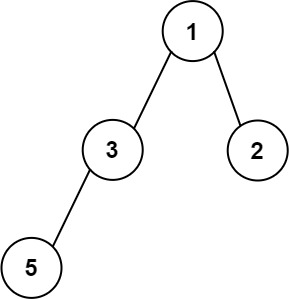

662. 二叉树最大宽度
BFS 给结点编号（根 1，孩子 2i、2i+1），每层宽度 = 最右编号 - 最左编号 + 1，取所有层的最大。
思路
- 结点、编号两个队列同步进出，一层一层处理；
first记本层最左结点的编号。 - 每弹出一个就用
idx - first + 1更新答案，本层最后一个弹出的编号就是最右端。 - 中间的空位没有结点但占用编号（比如只有右孩子 2i+1，编号 2i 缺席），宽度自然把空位算进去。
- 编号必须用
long（int 乘 2 会溢出）；深链连 long 都会回绕，但同层「末 - 首」差值不受影响。
图解
最优解
1import java.util.*;2 3class Solution {4 public int widthOfBinaryTree(TreeNode root) {5 int ans = 0;6 // 两个队列：结点 + 编号（根 1，孩子 2i 和 2i+1）7 Queue<TreeNode> nodes = new ArrayDeque<>();8 Queue<Long> ids = new ArrayDeque<>();9 nodes.add(root);10 ids.add(1L);11 while (!nodes.isEmpty()) {12 int sz = nodes.size();13 long first = 0;14 // first 记本层最左结点的编号，层宽 = 首尾编号差 + 115 for (int i = 0; i < sz; i++) {16 TreeNode node = nodes.poll();17 long idx = ids.poll();18 if (i == 0) first = idx;19 ans = Math.max(ans, (int) (idx - first + 1));20 if (node.left != null) {21 nodes.add(node.left);22 ids.add(idx * 2);23 }24 if (node.right != null) {25 nodes.add(node.right);26 ids.add(idx * 2 + 1);27 }28 }29 }30 return ans;31 }32}题目
给你一棵二叉树的根节点 root ，返回树的 最大宽度 。
树的 最大宽度 是所有层中最大的 宽度 。
每一层的 宽度 被定义为该层最左和最右的非空节点（即，两个端点）之间的长度。将这个二叉树视作与满二叉树结构相同，两端点间会出现一些延伸到这一层的 null 节点，这些 null 节点也计入长度。
题目数据保证答案将会在 32 位 带符号整数范围内。
示例 1：

输入：root = [1,3,2,5,3,null,9] 输出：4 解释：最大宽度出现在树的第 3 层，宽度为 4 (5,3,null,9) 。
示例 2：

输入：root = [1,3,2,5,null,null,9,6,null,7] 输出：7 解释：最大宽度出现在树的第 4 层，宽度为 7 (6,null,null,null,null,null,7) 。
示例 3：

输入：root = [1,3,2,5] 输出：2 解释：最大宽度出现在树的第 2 层，宽度为 2 (3,2) 。
提示：
- 树中节点的数目范围是
[1, 3000] -100 <= Node.val <= 100
题面取自力扣当前版本。
数据快照 2026-11-04。题面版权归力扣所有，本站点仅供本人学习使用，请勿对外发布。